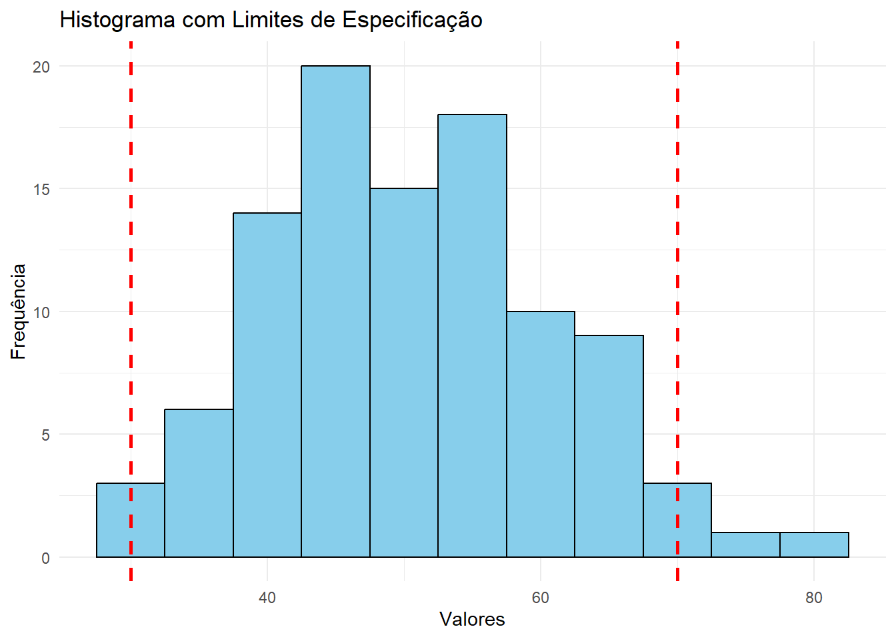

Código
LIE <- 45
LSE <- 55
desvio <- 1.5
Cp <- (LSE - LIE) / (6 * desvio)
Cp[1] 1.111111Os índices de capacidade do processo são parâmetros adimensionais que indiretamente medem o quanto o processo consegue atender às especificações. Eles comparam a dispersão do processo com os limites de especificação.
Limite inferior (LIE): valor mínimo aceitável Limite superior (LSE): valor máximo aceitável
> os índices de capacidade só têm sentido se os dados analisados forem provenientes de um processo dentro de controle. Eles são parâmetros (analisados e definidos);
> evidenciada a condição de controle o estudo de capacidade pode ser conduzido;
> eficiência - entendido como baixo nível de não-conformidades. **>
Mede a largura do intervalo de especificação em relação à variabilidade do processo.
Não considera o centramento.
Quanto maior o Cp, melhor
Na prática, o desvio padrão é desconhecido e deve ser substituído por uma estimativa de 6-sigma.
Cp = (LSE- LIE)/ 6*SIGMA …# melhorar (fazer Cp como ESTIMADOR)
Os limites expresam a tolerância natural doprocesso.
Note que o índice Cp relaciona a tolerância especificada com a tolerância natural do processo. Assim,
A percentagem utilizada mede o quanto da faixa de tolerância está sendo ocupada pela variabilidade do processo.
Pesp = (1/Cp)*100
>Valores baixos indicam boa folga para atender especificações. >Valores altos indicam risco de não conformidade.
LIE <- 45
LSE <- 55
desvio <- 1.5
Cp <- (LSE - LIE) / (6 * desvio)
Cp[1] 1.111111LIE =12.0
LSE = 12.6
media = 12.25
desvio = 0.06
Cpu <- (LSE - media) / (3 * desvio)
Cpu[1] 1.944444Cpl <- (media - LIE) / (3 * desvio)
Cpl[1] 1.388889Cpk <- min(Cpu, Cpl)
Cpk[1] 1.388889Cp_3 = 1.40
Pesp = (1/Cp_3)*100 #R: 71,43% de toda a variabilidade permitida (LSE - LIE)
Pesp #"Percentagem de Especificação utilizada = 71.43%[1] 71.42857LIE = 495
LSE = 505
media = 503
desvio = 2
Cpu <- (LSE - media) / (3*desvio)
Cpu[1] 0.3333333Cpl <- (media - LIE) / (3*desvio)
Cpl[1] 1.333333Cpk <- min(Cpu, Cpl)
Cpk [1] 0.3333333Interpretação: Como Cpk < 1.0 o processo não é capaz.
LIE = 97
LSE = 103
n = 30
s = 0.8
Cp = 1.33
# Calculo de Sig0 (desvio)
desvio_z = (LSE - LIE)/(6*Cp)
desvio_z[1] 0.7518797# Estataistica de teste
qui_quad = ((n-1)*s^2)/(desvio_z)^2
qui_quad[1] 32.83078# Análise: Valor crítico para alfa = 0.05, gl = 29
# qui_quad_Crit = 17.71
# Como qui_quad > qui_quad_Crit, não se rejeita H0,ou seja, o processo não é capaz
# Nota: Hipoteses
# H0: Cp = Cp0 x H1: Cp # Cp0 Interpretação: Como 32.83 > 17.71 ao nível de significancia de 0.05, não rejeitamos H0. Ou seja, o processo não é capaz.
Dados: 1005, 1008, 1004, 1007, 1006, 1009, 1005, 1004, 1008, 1006.
Especificações: LIE = 1000 g, LSE = 1010 g.
a) Calcular Cp, Cpu, Cpl e Cpk.
dados_7 = c(1005, 1008, 1004, 1007, 1006, 1009, 1005, 1004, 1008, 1006)
media =mean(dados_7)
desvio = sd(dados_7)
LIE = 1000
LSE = 1010
Cp <- (LSE - LIE) / (6 * desvio)
Cp[1] 0.9517337Cpu <- (LSE - media) / (3*desvio)
Cpu[1] 0.7233176Cpl <- (media - LIE) / (3*desvio)
Cpl[1] 1.18015Cpk <- min(Cpu, Cpl)
Cpk [1] 0.7233176b) Determinar a percentagem da especificação utilizada. —– ver 3a)
c) Construir um histograma com os limites de especificação
library(ggplot2)
library(qcc)
dados_7 [1] 1005 1008 1004 1007 1006 1009 1005 1004 1008 1006LSL <- 1000
USL <- 1001
library(ggplot2)
library(dplyr)
dad = data.frame(valor = rnorm(100, mean = 50, sd = 10))
# Defina seus limites de especificação
limite_inferior <- 30
limite_superior <- 70
# Crie o histograma com os limites de especificação
ggplot(dad, aes(x = valor)) +
geom_histogram(fill = "skyblue", color = "black", binwidth = 5) + # Crie o histograma
geom_vline(xintercept = limite_inferior, color = "red", linetype = "dashed", size = 1) + # Linha do limite inferior
geom_vline(xintercept = limite_superior, color = "red", linetype = "dashed", size = 1) + # Linha do limite superior
labs(title = "Histograma com Limites de Especificação",
x = "Valores",
y = "Frequência") +
theme_minimal() # Um tema simples para o gráfico